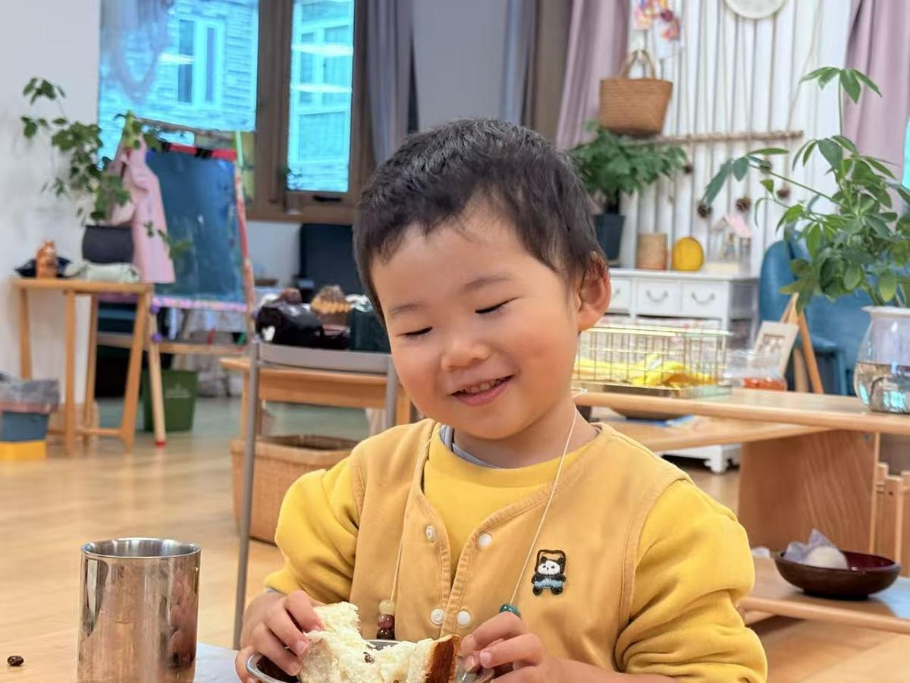
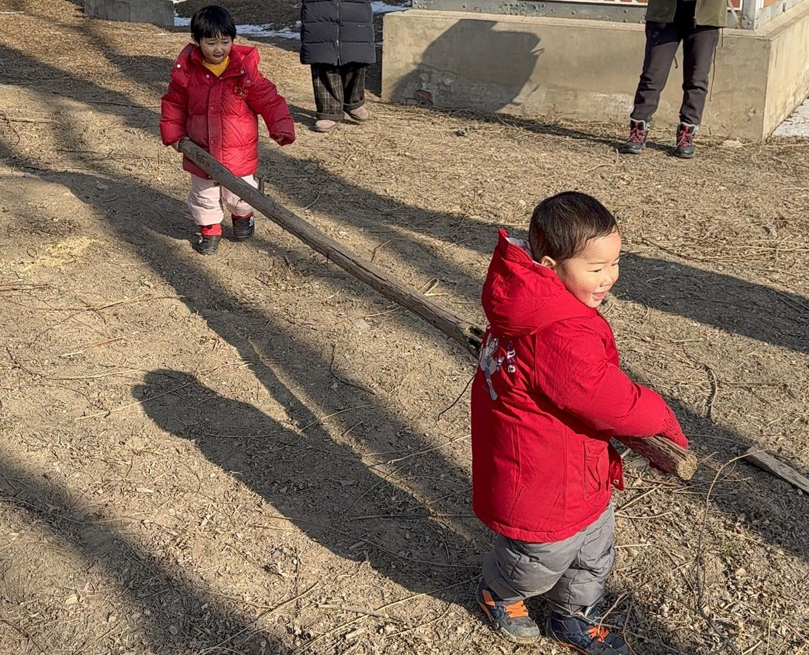

关于小核桃

小核桃
3岁
性格特质
坚持目标
📅 2026年1月26日

木头的故事：核桃周六去参加森林幼儿园的活动时，和团子（核桃熟悉，幼儿园同学）合搬了2条很长的木头，他们搬得很开心。后来活动结束了，大家拍完照片准备撤退了。这个时候，核桃和另一个小男孩（核桃不熟悉、我没有看到谁先谁后）突然都去搬了木头的一边，两个人朝着反方向使劲，都想把木头搬往自己的方向。核桃抬着木头一边使劲一边大声呼叫妈妈帮忙，我当然第一时间赶到他的身边，但是我不能真的帮忙因为是两个小孩在“争夺”木头。我说“妈妈看到了，你和小哥哥都想要木头”。核桃还是一边大哭一边坚持他没有放手。我只能在旁边陪他。后来不知道小男孩的家长说了什么他最后放手了，核桃得到了那根木头，他指挥我把木头搬到他指定的位置。
妈妈的观察：这个事件让我看懂了核桃底层的性格特质之一——对目标的咬定青山不放松。他可能有委屈、有勇敢、也有骄傲。在今后的养育中，我不需要为核桃设定任何目标，我需要传达的反而是面对目标的松弛感和平常心，以及提供合适的抓手助他达成目标。
简单
📅 2025年11月26日
上周日去上观察课，已经连续好久核桃进门后相当长的时间都在我的腿上坐着观察这个环境里的人和物，只有很少的时间"出门"自由探索，而且拿取的物品相当有限，大部分时间他都中意一条红色的丝巾。
其实我已经放弃解读这种玩具的偏好了，我觉得太表层了。但是今天老师提供的角度让我觉得很惊喜。
老师说他的观察结论是，核桃是一个很容易幸福的人，因为他的物欲很低，但是他对于他看中的目标是非常快准狠的，直接获取毫不在意别人的动作、毫不拖泥带水，这样的人很简单，也很容易获得幸福。
我好惊喜，尽管同一个动作在不同人的不同解读中会有天壤之别，例如某一时刻的我可能会焦虑他涉猎不够广泛，为什么他不多探索一些玩具呢？
但是这一刻的我深深被这种"简单"打动了，也被这种看问题的角度打动。
我立马决定我应该停止期待总是想要获得别人的认可，而是去做一个发现独特角度的人，每一个自己发现的角度都是人生的真相，每一个你相信的角度都可能成为人生的真理。
细腻
📅 2026年4月7日
不想上音乐课：核桃今天第二次跟我明确表达不想上课后的延时班音乐课，想跟无花果（森林课引导员）一起玩，让我把音乐课取消，即使我跟他介绍了，取消音乐课也无法跟别的小朋友（因为别的小朋友没有取消）或者无花果（我们只约好了周四的时间）一起玩。他坚持要取消。
后来我又问他，他说是因为音乐课不能我陪着，森林课我陪着了（因为我组织的我担心安全问题所以我每次都到了）。
后来我又问他，他说希望不上音乐课，希望我和姥姥一起去接他，说可以不抱着回家（因为我今天跟他介绍了妈妈的健身教练跟妈妈说，抱孩子影响了妈妈的走路姿势，妈妈上肢力量不够所以会借住骨盆前倾的力量，妈妈会变得不健康）。他好像一下就同意了我以后可以不抱着他。
最后我发现，他希望不上音乐课的原因是，课程拉长了在校时间，他没有办法更多的和妈妈和姥姥在一起。泪目了。
有边界感
📅 2026年4月21日
今天中午学校发生了一件事情，孩子们画画挨在一起，灿灿觉得核桃"侵犯"到她了领地了，就直接咬了核桃，核桃就反咬过去，俩人冰敷的时候和好了。老师说：核桃在正当防卫，他规则意识还是很强的。在幼儿园几乎没有攻击性行为。他表达也很明确，"因为灿灿咬我了。我就咬她了"。都是隔着衣服咬的，核桃说一点儿都不疼。
晚上睡觉：
核桃：为什么灿灿会咬我呀？
我：你知道为什么吗？
核桃：我也不知道
我：听老师说是因为你碰到了她的画是吗？她应该跟你说：请你让一下，而不是咬你
核桃：她说了呀
我：原来灿灿说了呀，那你让了吗？
核桃：让了
我：灿灿还是咬你了，那你疼吗？
核桃：疼，感觉到疼了才发现灿灿咬我了
我：你也咬她了，你觉得灿灿疼吗？
核桃：也疼
我：抱一抱我的宝宝
核桃：为什么灿灿会咬我呀？
我：可能她很生气吧！你不知道她为什么会咬你所以你担心她再咬你？
核桃：是的
我：那你希望妈妈去跟灿灿说一下吗？还是跟小爱说？
核桃：跟灿灿说，不跟小爱说
我：你希望妈妈去说的话，妈妈明天早上送你去上学的时候就在门口等灿灿，然后跟她说，这样行吗？你确定希望妈妈这样做吗？
核桃：假的
（再三确认后核桃一直说假的不希望我去找灿灿说）
遵守规则
📅 2025年3月27日
喂兔子事件：上午，小核桃切好了黄瓜和梨，我们准备了一个小黄桶装水果去喂兔子。下午自由活动时，所有小朋友都想参与，我们将黄桶放在固定位置，让孩子们依次从桶里拿一根黄瓜或一个梨喂兔子。
最初，Roman 和小核桃遵守规则，有序地进行喂食。然而，小羽加入后，她希望自己拎着黄桶，并说"不，不要"。小核桃则用手护住黄桶，坚定地回应"要，要，要"，连续说了三次，语气十分坚定。小羽看着小核桃，随后开始从桶里一根一根地取出黄瓜。
小爱老师的观察：核桃对规则的坚守和维护让我印象深刻，他知道大家应该遵守约定好的方式，并勇敢地表达和捍卫这个规则。
爱观察爱思考
📅 2026年3月3日
前情提要：为了不让核桃继续用iPad画画跟他说iPad摔坏了，已经半个月没使用了。
核桃：爸爸的手机也经常摔，为什么手机没有摔坏，iPad却摔坏了呢？
妈妈：你觉得是为什么？（思考中）
核桃：是不是因为iPad比较大，所以它有重力，就容易摔坏呀？手机小，就没有重力
妈妈：震惊…
核桃：（重复妈妈）为什么大的容易摔坏，小的不容易呢？因为大的重力大，小的重力小？
妈妈：震惊*2…
核言核语
"你刚生出来，你妈妈让你摸真正的火吗？"
核桃的思考
📅 2026年3月17日
"我什么时候才长大呀？"
核桃："我什么时候才长大呀？"
妈妈："你很想长大吗？"
核桃："嗯"
妈妈："为什么呀？"
核桃："我想我的乳牙掉，什么时候才能掉呀？"
📅 2026年3月1日
"看香蕉开花的样子"
核桃晚上没吃饭，饿了要吃一根大香蕉，吃完后拿着香蕉皮来到我面前，说："看香蕉开花的样子"
📅 2026年2月28日
"幸好还没刷牙"
核桃喝了两瓶牛奶（125ml）后说："幸好还没刷牙"
📅 2026年2月27日
"妈妈，我可以控制自己的尿尿吗？"
"妈妈，什么时候就到明天了"
"妈妈，那我们明天早上继续聊天吧！"
📅 2026年2月26日
"烟花溅出来了，妈妈快看"
过年时我们住在高层，可以看到一些些越过楼顶的烟花，核桃兴奋地说："烟花溅出来了，妈妈快看"
📅 2026年2月23日
"别这么说！"
核桃反PUA第一人——
姥姥："如果你不xxx就不能xxx"（比如"你叫妈妈搭积木，就没有水果吃了"）
（姥姥希望我可以去洗澡，她来陪核桃）
核桃坚定地说："别这么说！"
📅 2026年2月8日
"长大了就可以陪妈妈吃辣椒了！"
"西梅真好吃呀！妈妈怎么不爱吃呀！"
核桃的困惑
📅 2025年11月3日